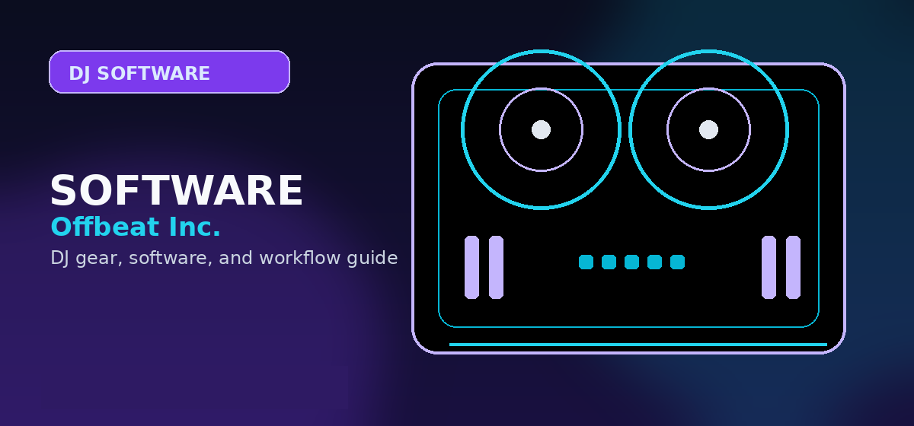

Getting Started
Answers to the most common DJ software questions — Serato vs rekordbox, free vs paid, streaming support, and beginner recommendations.

Disclosure: This page uses affiliate links. We may earn a commission at no extra cost to you. Full disclosure →
These are the real questions beginners search for but rarely find direct answers to. No fluff.
Getting Started
Which DJ software should a complete beginner use?
Start with whatever is bundled free with your controller. If you have a choice: Serato DJ Lite (most commonly supported, easiest club transition) or rekordbox (best if you plan to use Pioneer CDJs). VirtualDJ has the most features in free tier but a steeper learning curve.
Is free DJ software good enough?
Yes. Serato DJ Lite, Mixxx (open source), and rekordbox (core features free) are all good enough to learn and perform with. You don't need paid software until you hit specific feature limits.
Does DJ software require internet?
Most DJ software works offline for locally stored library. Streaming features (Tidal, SoundCloud integration) require internet. Serato, rekordbox, and Traktor all run fully offline from local storage.
Software Comparison
Serato vs rekordbox — which is better?
Serato: Better club DJ support (Serato is industry standard in US clubs), superb DVS implementation, larger community. rekordbox: Better Pioneer CDJ integration, cleaner library management, superior BPM analysis on variable-tempo tracks. Neither is objectively better — choose by your use case.
Is Traktor Dead?
No. Native Instruments still actively develops Traktor Pro 3. The community is smaller than Serato/rekordbox but the hardware integration (Maschine, Komplete) is best in class for producers who also DJ.
Technical Questions
What sample rate and bit depth for DJ sets?
44.1kHz / 16-bit (standard CD quality) is the minimum. Most DJ software defaults to 44.1kHz/24-bit, which is fine. 48kHz is used for video production. Don't use 96kHz — it doubles CPU load with no audible benefit for DJ use.
Bottom line: Most DJ software questions have straightforward answers — start with the trial version of your preferred software before committing.
⚡ Check current prices and deals:
DJ Software Feature Comparison
| Software | Price | Stems | AI Features | Best For |
|---|---|---|---|---|
| Serato DJ Pro | $149/yr | ✅ | ✅ | Club DJs |
| Traktor Pro 3 | $99 | ✅ | ❌ | Techno/Electronic |
| rekordbox | Free-$79/yr | ✅ | ✅ | Pioneer gear users |
| VirtualDJ | Free-$299 | ❌ | ✅ | Wedding/Mobile DJs |
| djay Pro AI | $49.99 | ✅ | ✅ | Beginners / iPad DJs |
Expert Tips and Key Considerations
Before making your final decision, review these expert-level considerations from experienced DJs and producers in the community:
- Beat gridding affects how FX and loops work — All DJ software relies on accurate beat grids to lock loops and effects to the music's beat; poor beat grids on tracks with tempo fluctuations can cause loops and FX to drift
- Key lock (Master Tempo) changes pitch without changing speed — Key lock uses pitch shifting to keep a track's musical key constant when you change its BPM with the pitch fader; some DJs prefer to disable it and let the track pitch-shift naturally
- Prepare mode vs Performance mode in Rekordbox — Prepare mode is for analysing, tagging, and organising your library at home; Performance mode is activated with compatible Pioneer hardware and enables live mixing
- Cloud library sync enables multi-device access — Rekordbox's cloud sync lets you access your full library from any computer logged into your account; useful when using a backup laptop or a friend's computer
- What is a hot cue and why does it matter — A hot cue is a saved position in a track that you can jump to instantly with a button press; DJs use them to mark the first beat, drop, verse, and breakdown of tracks for fast and reliable triggering during live performance
- Quantize mode for beginners — Quantize mode (available in most DJ software) snaps your pad triggers and loop points to the nearest beat; useful for learning accurate technique before moving to unquantized performance
- Streaming track quality vs downloaded tracks — Tidal (DJ Pro) offers CD-quality and Master Quality streaming; SoundCloud's highest tier offers 256kbps AAC; neither matches a locally stored 320kbps MP3 or WAV, but the difference is minor on most playback systems
- Why your mix sounds different on other systems — DJ controllers include audio interfaces with their own frequency response characteristics; your mix will sound different on flat studio monitors vs a club's bass-heavy PA system, which is why monitoring on flat speakers during mix preparation is important
- MIDI vs HID vs DVS controller modes — MIDI mode is universal but limits to basic controls; HID mode provides deeper, hardware-level integration with fewer conversion steps and lower latency; DVS uses timecoded vinyl to control software
- What is slip mode — Slip mode continues the track's playback position in the background while you are holding a loop, cue point, or performing a scratch; releasing returns the track to where it would have been if you hadn't intervened, allowing seamless resumption
- How to back up Serato or Rekordbox libraries — Export the Serato Settings > Library to a portable drive using Serato's built-in export; in Rekordbox, use File > Library > Backup Library to create a timestamped backup file that can be restored on any computer
Getting Started Questions
What is the best DJ software for beginners?
The most consistently recommended DJ software for beginners is Rekordbox (Pioneer DJ) for its comprehensive free tier, industry-standard club compatibility, and the fact that it is included free with most Pioneer controllers. Serato DJ Lite is also widely used and comes bundled with many entry-level controllers from multiple brands. VirtualDJ has an excellent free home-use version with the widest hardware compatibility of any DJ software.
Do I need to buy software or can I use free versions?
You can learn and perform professionally with free software versions in most scenarios. The main reasons to pay for full versions are: recording your mixes (Serato DJ Pro), using 4 decks (Serato DJ Pro, Traktor Pro), accessing streaming services (Serato DJ Pro, Rekordbox monthly plan), or using more than 2 hot cue points per track (Serato DJ Pro).
Hardware Compatibility Questions
Can I use any controller with any software?
Most DJ controllers work with most DJ software via general MIDI mapping, but the cleanest experience comes from using controllers with their native software integration. Pioneer controllers work best with Rekordbox; Rane controllers work best with Serato; Native Instruments controllers work best with Traktor. Using non-native combinations typically means missing out on hardware-specific features.
Will my controller work with my Mac / Windows / Linux?
Most controllers have drivers for macOS and Windows; Linux support is uncommon and typically requires manual MIDI mapping without a dedicated driver. Always check the manufacturer's download page for your specific controller model and OS version before purchasing.
How do I fix audio dropouts and stuttering?
The most common causes are: buffer size too small (increase in audio settings), background processes consuming CPU (close other applications), USB power management throttling the connection (disable in device manager on Windows), or a failing USB cable (replace the cable). Start with increasing the buffer size in your software's audio settings.
Performance and Technique Questions
Should I use the sync button or manual beatmatch?
Use sync if it improves your performance; avoid it if it creates a crutch that prevents you from developing ear training. Most professional DJs use sync routinely — it is a tool, not cheating. However, understanding manual beatmatching makes you a better troubleshooter when sync fails in a live environment.
Which key detection software is most accurate?
Mixed In Key is consistently rated as the most accurate harmonic analysis tool across independent tests. It runs as a separate application and writes key tags directly to your music files, which are then read by your DJ software. Within DJ software, Rekordbox's native key analysis has improved significantly and is considered the second most accurate option.
How do I prevent my mix from sounding muddy when blending two tracks?
Muddy mixes are almost always caused by competing bass frequencies from two tracks playing simultaneously. The standard technique is to cut the bass EQ on the incoming track to near-zero, bring the track in with only mid and high frequencies audible, then gradually swap the bass EQ from the outgoing track to the incoming track over 4-8 bars.
Technical Setup Questions
What sample rate should I set my DJ software to?
44,100 Hz (44.1 kHz) is the standard for DJ mixing. Some DJs use 48 kHz, which is the standard for video production. There is no meaningful audible difference between the two at output quality; choose 44.1 kHz unless you have a specific reason to use 48 kHz.
What buffer size should I use?
Start at 256 samples and reduce toward 128 samples if your system can handle it without audio glitches. Lower buffer sizes reduce latency (making jog wheel and button responses feel more immediate) but require more CPU processing power. 512 samples is appropriate for older hardware. Anything above 512 samples will produce noticeable latency.
Workflow and Mixing Optimization Questions
How do I build a cohesive DJ set using software?
Create playlists organized by BPM range and energy level. Use your software's browser to filter by key, genre, and energy. Most professional DJs build "lane" playlists for different scenarios (club night, wedding, radio show) and refine them over weeks. Set markers and cue points in your software during practice sessions so you can quickly navigate tracks during live performance.
Should I buy additional plugins or effects for my DJ software?
No. Every major DJ software includes sufficient effects (echo, reverb, filters, EQ) for professional mixing. Third-party plugins are rarely needed unless you're producing as well as performing. The built-in effects in Serato, Traktor, rekordbox, and Virtual DJ are professional-grade. Spend your money on quality headphones and speakers, not plugins.
How do I prevent audio latency issues when performing live?
Use a dedicated audio interface with low-latency drivers, avoid USB hub connections (plug directly into your computer), disable energy-saving features on your laptop, close background applications, and keep buffer size at 128-256 samples. Test your entire setup (controller + interface + software + headphones) before any live performance. Most latency problems stem from incorrect configuration, not hardware limitations.
Frequently Asked Questions
Can I use DJ software without a controller?
Yes. All major DJ software works with a mouse and keyboard. It's not fun for performance, but it's fine for library management, preparation, and learning the software UI.
Does DJ software support FLAC files?
Serato DJ Pro supports FLAC natively. rekordbox does not (requires WAV/MP3/AAC/AIFF). VirtualDJ and Traktor both support FLAC. If your library is FLAC, Serato or VirtualDJ is the path of least resistance.
What should I check before choosing DJ software?
Check controller compatibility, library tools, streaming support, stem features, recording limits, subscription cost, and whether the software matches the venues or hardware you expect to use.
Can I start with free DJ software?
Yes, but free versions often restrict hardware, recording, effects, or advanced library features. Use free software to learn basics, then upgrade when the limitations slow you down.
Does DJ software choice affect controller choice?
Yes. Many controllers are built around rekordbox, Serato, Traktor, VirtualDJ, or djay. Choose the software path before buying hardware whenever possible.